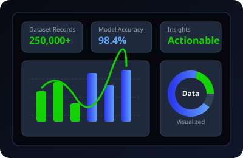

Data Track
Data Analytics
Master data interpretation, exploratory analysis, metrics reporting, and predictive modeling. Transform raw datasets into actionable insights that power strategic decision-making.

Key Focus Areas & Tools
Data Visualization
Exploratory Analysis
SQL & Querying
Python for Data
Dashboarding
Business Insights